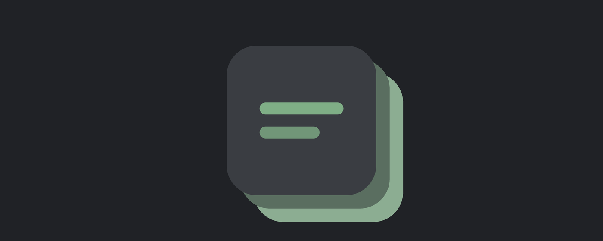

Turn "too many open tabs" into a simple reading queue.

Save any tab with one click, a keyboard shortcut, or a right-click — then work through your list one page at a time whenever you're ready, instead of drowning in dozens of open tabs.
Free tier: save up to 15 tabs. Premium unlocks unlimited for £5, one-time — no subscription.